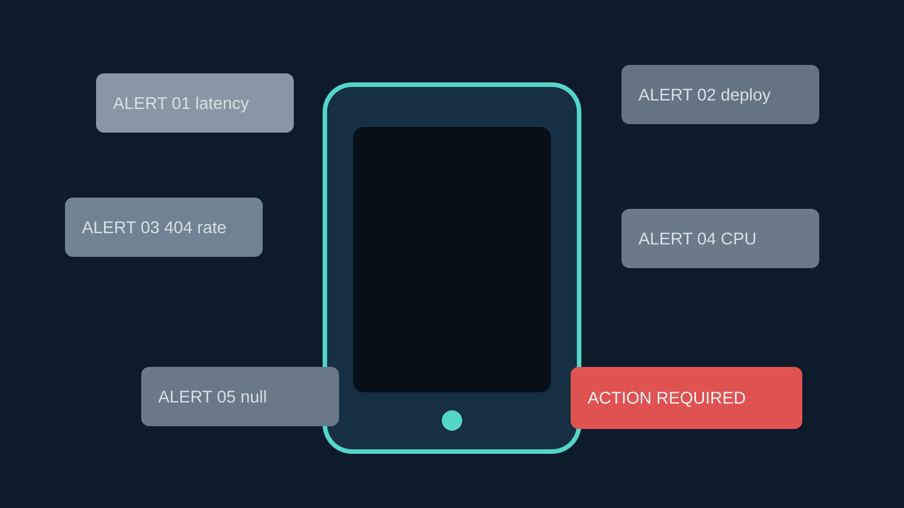
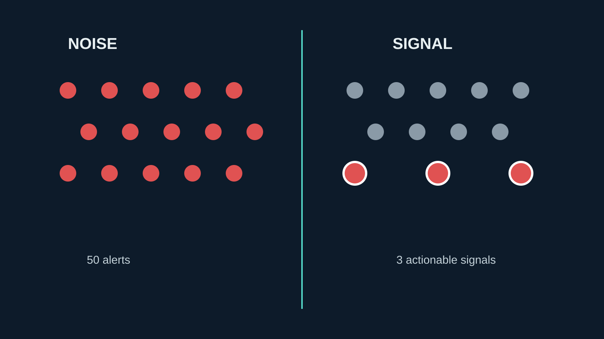
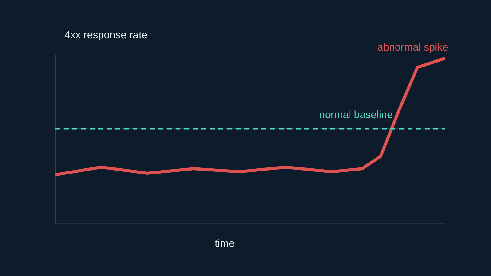
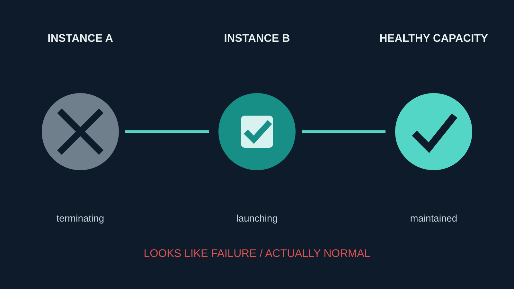
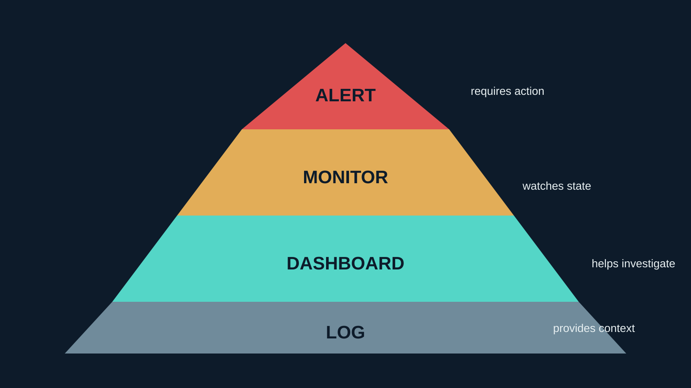
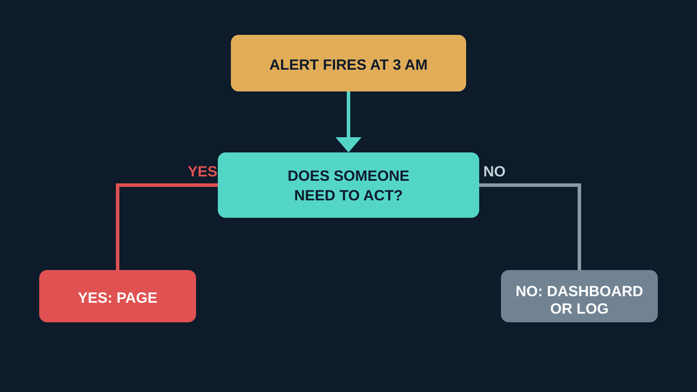
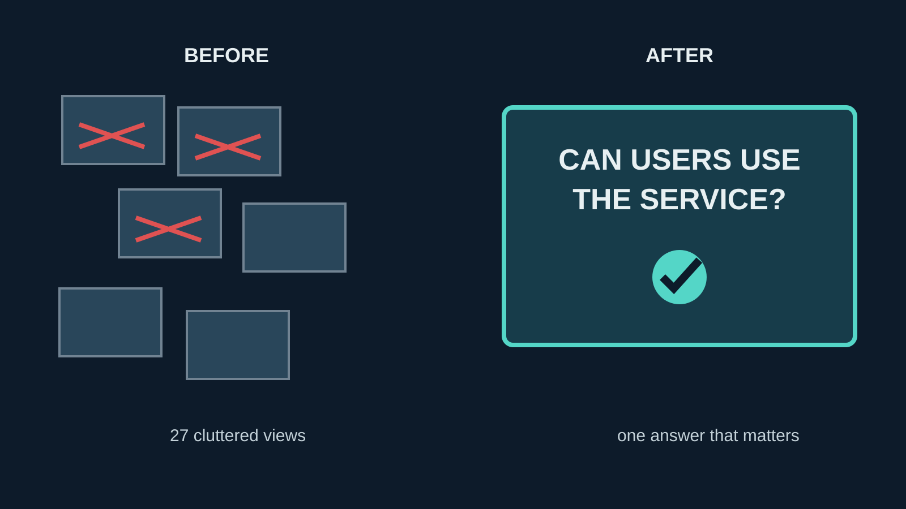

More dashboards, more monitors, more metrics, and more alerts are often treated as proof that observability is improving.
It is an easy assumption to make. If a team can see more of the system, the system must be easier to operate. In practice, the opposite can happen. A team that receives 50 alerts and only needs to act on three of them does not have better observability. It has more noise competing with the signal.
The goal of observability isn't to monitor everything. It's to make the important things obvious.

Monitoring everything doesn't mean observing everything
I have seen monitoring systems grow in a predictable way. A team adds a metric for a new component. Someone creates a monitor from that metric. The monitor pages on a threshold. A dashboard is added so people can inspect it. Then another service is connected, and the pattern repeats.
The result looks impressive in an inventory: thousands of metrics, hundreds of monitors, and a long list of dashboards. But an inventory is not an operating model. The important question is whether the system helps someone understand what is happening and choose the right action.
A monitor can be technically correct and operationally useless. A database connection count can be accurate while telling me nothing about whether users can complete checkout. A deployment event can be real without being a problem. A 404 can be expected application behaviour.
Observability is not the amount of data collected. It is the quality of the explanation that data enables.

Not every 4xx is an incident
HTTP status codes are a common source of alert noise because they are easy to count and easy to threshold.
A 400 may mean a client sent invalid input. That can be a valid response from a healthy API. A 404 may mean a user looked up a resource that does not exist, or that the application intentionally uses a missing resource as part of a normal workflow. Some APIs use other 4xx responses to represent authentication, validation, rate limiting, or business rules that clients are expected to encounter.
Alerting on raw status codes treats all of those cases as failures. It asks, "Did an error response happen?" when the operational question is usually, "Is the system behaving abnormally?"
Those are different questions.
A useful monitor might detect that the 404 rate for a known endpoint has suddenly moved well above its normal baseline. It might compare the rate by route, client, release, or region. It might alert when a validation response changes from a small, expected proportion to a sustained spike after a deployment.

The status code is still useful. It becomes a signal when it is interpreted with traffic, route, time, and user impact instead of being promoted directly to a page.
Null doesn't automatically mean broken
Null values create the same trap in data pipelines, APIs, and application logs. A query finds a null and a monitor treats it as evidence of failure.
But null can mean several normal things:
- The data does not exist yet.
- The field is optional for this kind of object.
- A downstream system has not returned a value.
- The application intentionally returns null when there is no applicable result.
The presence of null is not enough to establish an incident. The useful question is whether the null rate has changed in a way that affects expected behaviour.
For example, an optional profile field may be null for most records and still be perfectly healthy. A payment status that becomes null for a growing share of completed transactions is a different situation. The monitor needs application context: which fields are optional, what the normal distribution looks like, and what outcome users experience when the value is missing.
Null does not equal incident. An alert should understand the contract of the application it is watching.
The "restart" that wasn't a failure
Infrastructure metrics can also make normal behaviour look like failure. Consider an AWS Auto Scaling Group during a rolling deployment.
Instance A is terminated. A replacement, Instance B, is launched. The health check passes, and the group returns to its desired healthy capacity. From an event stream, the sequence contains a termination and a launch. A monitor that pages whenever an instance terminates may describe the deployment as an outage.
The system's actual behaviour says something else: capacity was maintained, the replacement became healthy, and the service continued operating.

The better signal is not "an instance terminated." It is "the Auto Scaling Group cannot maintain healthy capacity," or "replacement instances are failing health checks," or "available capacity fell below the level required for the service."
Events provide context. State and user impact determine whether the context represents a failure.
Alerts nobody needs to act on
I use a simple test for every proposed page: if this alert fires at 3 AM, what should the person receiving it do?
If the answer is "nothing, it is expected," it should not page anyone. It may still belong in a dashboard, a log, an event stream, or a lower-priority notification. But paging is a request for human attention, and human attention is a limited production resource.
These terms are useful when designing the boundary:
| Tool | Purpose |
|---|---|
| Alert | Requires a person to take action |
| Monitor | Watches a condition or trend |
| Dashboard | Helps someone investigate and understand state |
| Log | Provides detailed context about an event |
The distinction prevents a monitor from quietly becoming an alert just because a threshold was added. It also makes ownership clearer. A dashboard can contain useful detail without implying that every change deserves a response.


The dashboard nobody looks at
A team can have 27 dashboards, 143 monitors, and thousands of metrics, then still struggle to answer one basic question: are users actually able to use the service?
That is usually a sign that monitoring has been organised around components rather than service outcomes. Engineers can see CPU, memory, queue depth, pod restarts, database connections, and deployment events. They cannot quickly tell whether a user can sign in, submit an order, retrieve a report, or complete the workflow that matters.
Service-level indicators and transaction-level monitoring close that gap. They connect technical data to a meaningful operation: successful requests, acceptable latency, completed workflows, or another measurable user outcome. The details still matter during investigation, but the first view should answer whether the service is working.
I have written more about the SLI and SLO side of this in my SLO alerting framework article. The important point here is simple: monitoring should begin with the question the service owner needs answered, then collect the evidence needed to answer it.

What good monitoring looks like
I define a signal as something that helps me understand or act on the state of the system. That definition includes metrics, logs, traces, events, and user-level checks. It excludes data that is merely available but does not improve a decision.
The difference is often a change in framing:
| Noisy monitoring | Better signal |
|---|---|
| Alert on every 404 | Alert on abnormal 404 rate |
| Alert on any null | Alert when null rate deviates from baseline |
| Alert when an instance terminates | Alert when the ASG cannot maintain healthy capacity |
| Alert on every 5xx | Alert on sustained / error-budget-impacting failures |
| Monitor CPU alone | Correlate CPU with latency and traffic |
This does not mean removing all low-level telemetry. CPU, instance lifecycle events, null counts, and 4xx responses can all be valuable during diagnosis. The design mistake is allowing every diagnostic detail to become an interruption.
Good monitoring also has a clear owner and a clear response. Someone should be able to explain what the signal means, why its threshold exists, what normal looks like, and where to start when it changes. If nobody can answer those questions, the monitor is probably carrying more confidence than it has earned.
Conclusion
The harder monitoring problem is not collecting one more metric or adding one more dashboard. It is deciding what deserves attention.
That decision requires knowledge of application behaviour, user workflows, normal variation, and the actions available to the person on call. It means separating expected errors from abnormal changes, infrastructure events from service failures, and useful context from urgent signals.
The goal of observability isn't to monitor everything. It's to make the important things obvious.
A good monitoring system doesn't tell you everything that happened. It helps you quickly understand what matters.